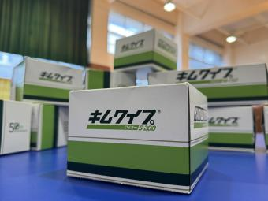
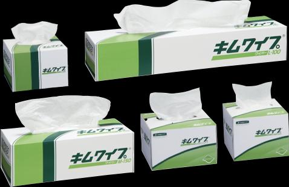
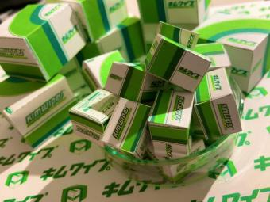

TOKYO METROPOLITAN SCIENCE & TECHNOLOGY HIGH SCHOOL
2026
キムワイプ卓球
研究者たちの息抜きとして生まれた、箱で打ち合うサイエンティフィック・スポーツ。ぜひ会場で体験してください。

EVENT INFORMATION
まず知りたい開催情報
- 開催日
- 時間
- 未確定決まり次第掲載します
- 会場
- 東京都立科学技術高等学校405講義室
- 料金
- 未確定決まり次第掲載します
HOW TO JOIN
参加方法
参加方法は現在調整中です。詳細が決まり次第、このページでご案内します。
開催日9月12日・13日
会場405講義室
申込方法未確定
申込先が未確定のため、現在は申込ボタンを設置していません。
ABOUT THE SPORT
キムワイプ卓球とは
キムワイプの箱をラケットの代わりに、机をコートとしてピンポン玉を打ち合う競技です。研究者たちの息抜きから生まれ、交流を深めることを目的に広まりました。
2008年に国際キムワイプ卓球協会が設立され、チラシ記載時点で会員数は637名と紹介されています。

FIVE RULES
楽しむための5つのルール
- 01
試合時間は5分同点の場合は1点先取の延長戦を行うことがあります。
- 02
キムワイパーキムワイプに興味を持った人は、みんな「キムワイパー」です。
- 03
ツーバウンドまでOKワンバウンドだけでなく、ツーバウンドでも返球できます。
- 04
箱を大切に競技中にキムワイプの箱を開けないでください。
- 05
勝敗より楽しさ勝ち負けにこだわりすぎず、競技そのものを楽しみましょう。
PHOTO GALLERY
昨年のようす
読み込むたびに写真の順番が変わります。写真を選ぶと拡大表示できます。
SPECIAL CRAFT
ミニキムワイプを作ろう
体験者にはミニキムワイプのペーパークラフトをご用意しています。数量限定です。

ABOUT KIMWIPES
そもそもキムワイプとは？
毛羽立ちや紙粉が少なく、クレープ加工による吸収性と拭き取り性に優れた紙製ワイパーです。研究室、工場、病院などで使用されています。
学校の実験だけでなく、家庭の掃除、万年筆や模型の手入れなど幅広い場面で使われ、ホームセンターやオンラインでも販売されています。
LINKS